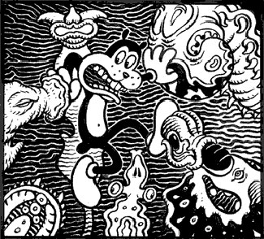
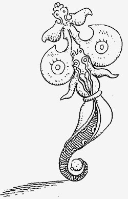
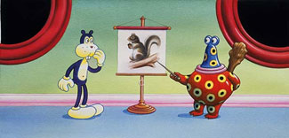
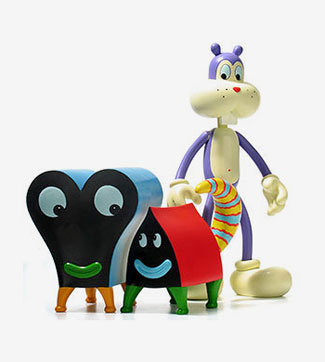
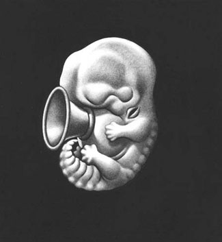
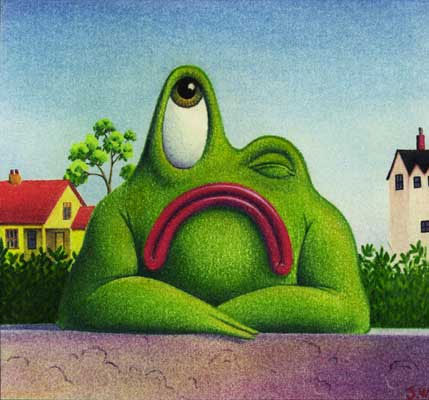
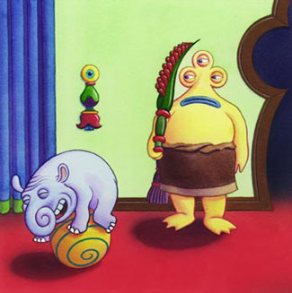

ДЖИМ ВУДРИНГ
his father was a great machine
Мне представляется, что художнику совершенно необязательно всю жизнь страдать от видений и сходить с ума. Профессия как профессия. Разве что требующая, может быть, большей эмоциональной отдачи — и то многие обходятся. Но для общего движения вперед пяток больных на голову гениев совершенно необходим.
Все здесь, надеюсь, знают, кто такой Джим Вудринг, но написать про него мне придется, не обессудьте. К иллюстрации этот выдающийся художник имеет самое косвенное отношение, и о его влиянии на современное искусство говорить сложно (хотя отсылки попадаются), по причине абсолютной самодостаточности его внутреннего мира — словосочетание, которое в этом редком случае звучит буквально и неизбито.
Сам он рассказывает, что некогда обратился по какому-то пустяшному (не знаю, не знаю) поводу к психотерапевту. Тот, вернее, та, назначила ему дату следующей встречи, он же для ознакомления с тем самым внутренним миром оставил ей почитать книжку своих комиксов. На следующий день эта дама позвонила ему и сообщила, что отказывается с ним работать. Вудринг пожал плечами и через какое-то время по случаю рассказал этот эпизод другому психотерапевту. Тот возмутился таким грубым нарушением врачебной этики, затем попросил все же показать ему книгу. Нужно ли говорить, что реакция была точно такой же. Причем ни от одного из докторов Вудрингу не удалось добиться внятных объяснений.

Мир, изучаемый Вудрингом, по его словам, он «просто существует» в его голове, и с самого детства твари, населяющие тамошнее занебесье, преследуют его неотступно.
Это ангел

Из всех известных мне придуманных (вернее, так: иных) миров этот наименее похож на наш. В одном из эпизодов главный герой (полубобер — полукот), увидев в огромный чертов телескоп вывеску земного кондитерского магазина, падает замертво.

Его жизнеописания бесконечно далеки от моралей, аллегорий, психологизма, и даже, по большому счету, эмоций — они полностью замкнуты на себе. Тем не менее, книга Френка служит лично мне мощнейшим и до сих пор неиссякаемым источником вдохновения. Для меня это все равно, что библия, или букварь, как угодно; одно время я спал с ней в обнимку.

Красное существо зовут Pupshaw, это, кажется, девочка, по сути она полубог, но служит Френку домашним животным. Синее — Pushpaw, ее бойфренд.
Мир Френка — только часть работы Вудринга, но, точно самая важная. (Ближе познакомиться с этим человеком можно в его ЖЖ). Все остальное, в особенности автобиографические комиксы, рекомендуются исключительно поклоннникам и даже от них требуют подхода крайне осторожного. Читать это, прямо скажем, трудно. Зато имеются вот такие чудеса:

лягушки в изобилии,

а также всем известный Протей Темен

Перфразируя Сэлинджера, правильнее всего было бы, ни слова не говоря, повесить здесь Книгу Френка целиком, но тут могут случиться сложности с авторскими правами. А ссориться с таким мощным магом по меньшей мере глупо.